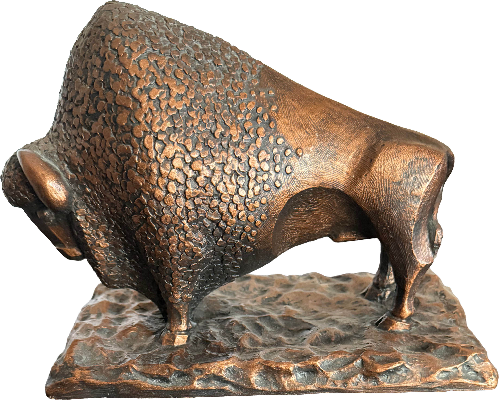
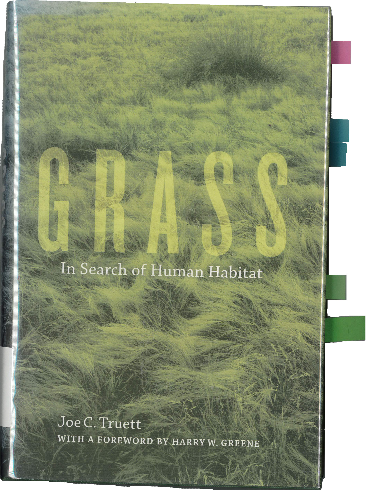
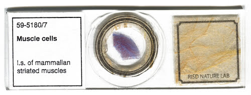
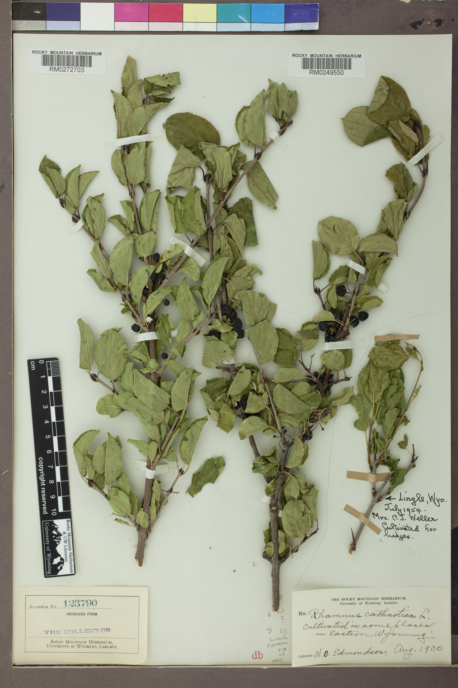

An archival shelf (4 objects)

Collection: Office of J. McCabe
Material: Bronze Cast
Gift from P. McCabe
Material: Bronze Cast
Gift from P. McCabe

Collection: Madigan Library, PA College of Technology
Stacks 2nd Floor
QH541.5 .P7 T78 2010
Stacks 2nd Floor
QH541.5 .P7 T78 2010

Collection: Micropolis, RISD Nature Lab
Providence, RI
Providence, RI

Common Name: Buckthorn
Collection: Rocky Mountain Herbarium
Laramie, Wyoming
Collection: Rocky Mountain Herbarium
Laramie, Wyoming